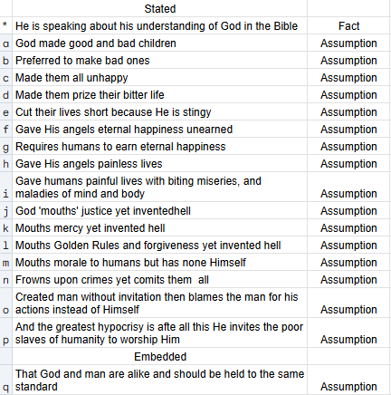

A friend of mine on Facebook posted a comment Mark Twain once made about God, and I replied right there that Twain was cherry-picking verses and ideas from the Bible to build a strawman — making God out to be a hypocrite by his own carefully rigged definition of the word. But I don't want to hash out something this big in a comment thread, so let me respond properly here instead.
Here's the quote, in full:
“A God who could make good children as easily as bad, yet preferred to make bad ones; who could have made every one of them happy, yet never made a single happy one; who made them prize their bitter life, yet stingily cut it short; who gave his angels eternal happiness unearned, yet required his other children to earn it; who gave his angels painless lives, yet cursed his other children with biting miseries and maladies of mind and body; who mouths justice, and invented hell — mouths mercy, and invented hell — mouths Golden Rules and forgiveness multiplied by seventy times seven, and invented hell; who mouths morals to other people, and has none himself; who frowns upon crimes, yet commits them all; who created man without invitation, then tries to shuffle the responsibility for man's acts upon man, instead of honorably placing it where it belongs, upon himself; and finally, with altogether divine obtuseness, invites his poor abused slave to worship him!”
Here's what I hear him actually saying, broken down claim by claim, alongside whether each one is a stated fact from Scripture or just an assumption smuggled in:

Correct me if I'm wrong, but let's start here. I've studied the world's major religions, particularly the top four — Christianity, Islam, Hinduism, and Buddhism. Every single claim in that quote is aimed only at the Christian God. So let me take these one at a time, straight from the Bible.
- This is a broad statement. It's more accurate to say He made all children, and the human condition itself is both good and bad. After sin entered the world, the Bible says we're essentially bad by default — nobody has to teach a toddler to lie or hit. But there's still real good in every child too, because they're made in the image of God.
- That already rules out that He preferred to make them bad.
- It also rules out that He made them all unhappy. What Twain is likely pointing at is that people are unhappy when they sin and live apart from God — which is true, but that's not the same as God designing unhappiness into them from the start.
- Unsure exactly what's meant here, but the Bible actually says the opposite — God richly gives us everything for our enjoyment (1 Timothy 6:17). Life is precious. We should prize it — prize being an eternal soul made in His image, even while both our nature and our world remain broken.
- Yes, He did cut man's days short. God knew that man — originally designed for endless life on this earth — couldn't be allowed to live forever in a fallen condition. He had another plan already in motion: redeem and restore both man and earth from the curse sin brought.
- I'll grant I need to investigate this one further. I don't recall anywhere that God gave angels unearned happiness outright. He made them, gave them a place and a role in His kingdom. Do angels have emotions? If so, they're genuinely happy in heaven — and yes, in that sense it's unearned, just like it was for man in the Garden. But it's also “earned” in one sense: be holy, don't sin. When Satan and a third of the angels rebelled, they forfeited that happiness. Adam and Eve did the same.
- God has never required humans to earn their happiness. Unlike angels, humans can repent and turn back to Him in faith that He'll receive them. The requirement is simply to return to Him — happiness is the natural result, not a wage.
- Yes, God gave angels painless lives — until they rebelled against Him.
- God gave humans painless lives too, in a perfect Garden in a perfect world, providing for them in every way. The miseries and maladies Twain lists only showed up after disobedience entered the picture.
- Yes. That's exactly the point.
- Yes. That's the point — He sent His only Son to die for us, so we could return to Him and receive back all the goodness and beauty He designed us for in the first place. That's mercy.
- Yes. Same as above — forgiveness for us, judgment for Satan and his angels. Both can be true without contradiction.
- I genuinely don't know where this comes from. My best guess is the assumption that God tells humans not to be jealous or angry while also forbidding it in Himself. But Scripture is clear that He is both jealous and angry — and that His jealousy and anger are pure, flowing from a pure heart and a great love. He's jealous that we've turned to spiritual harlotry instead of Him (read Hosea sometime). He's angry that Satan has been destroying everything He's made, and angry that sin has wrapped itself around His children's necks and is squeezing the life out of them. That's a world apart from human jealousy and anger, which almost always centers on ego, pride, and self.
- Again, I don't know where this comes from. What crime has God ever committed? (Jeremiah 2:5 is worth reading here — it's God Himself asking what fault His people ever found in Him.)
- He created man with real choice, because choice is required for love to mean anything — love for Him, love for each other. Why would He take the blame for our choice to turn against Him? That would only make sense if He'd made us robots, in which case our evil actions really would be His fault. But He didn't.
- Yes, He does invite us — because He knows that in His presence is fullness of joy, and at His right hand are pleasures forevermore. He knows that's simply how it is, how it has to be: united to Him in love and worship. Twain even uses the right word, “invites.” God would never force it, because it can't be forced. You can't compel anyone to genuinely love or worship anything — it has to come from the heart. And there it is again: He gave us the choice. Everything Twain calls hypocritical about God is really just the cost of Him giving us free will. And we chose wrong.
There's one more claim buried in all this, an assumption underneath everything else: that God and man are alike, and should be judged by the same standard. That's actually the real hinge the whole argument swings on, so it's worth slowing down for.
Theologians have long split God's attributes into two categories. One set describes His scope and mode of being — omniscience, omnipotence, omnipresence, eternity, self-existence. These are called incommunicable, because we have no real analog to infinite power or infinite knowledge; there's nothing to imitate there. The other set describes His character — holiness, love, justice, mercy, faithfulness. These are communicable, because we do have finite, imperfect versions of them, and we're actually commanded to grow in them. Jonathan Edwards argued holiness isn't just one attribute among many but the root all the others grow out of. John Wesley fused holiness and love into a single idea he called “holy love,” since love without holiness collapses into indulgence, and holiness without love hardens into legalism.
What's striking is how sparing Scripture is with flat statements about God's nature. There are really only three: God is spirit (John 4:24), God is light (1 John 1:5, widely read as holiness — “in Him is no darkness at all”), and God is love (1 John 4:8, 16). Two of the three land squarely on holiness and love. And those two meet at exactly one place in history: the cross, where holiness's demand that sin be dealt with, and love's provision of mercy for the sinner, are both satisfied at once (Romans 3:25–26).
Twain's whole argument depends on holding God to a standard built from His incommunicable attributes — infinite power, total control — while ignoring the communicable ones He actually calls Himself by and calls us to imitate. Judged by holiness and love, nothing in that quote holds up. Judged by “why doesn't an infinitely powerful being just fix everything by force,” you can make almost anyone with power look like a tyrant, including a God who loved us enough to give us the one thing that makes love possible at all: the freedom to say no.
Comments